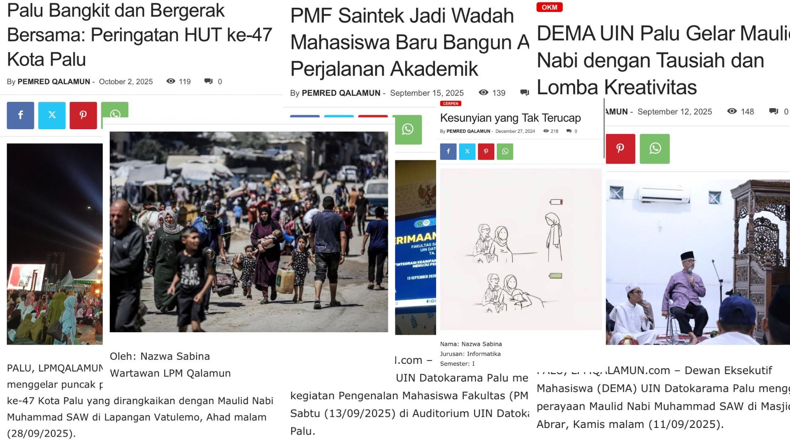
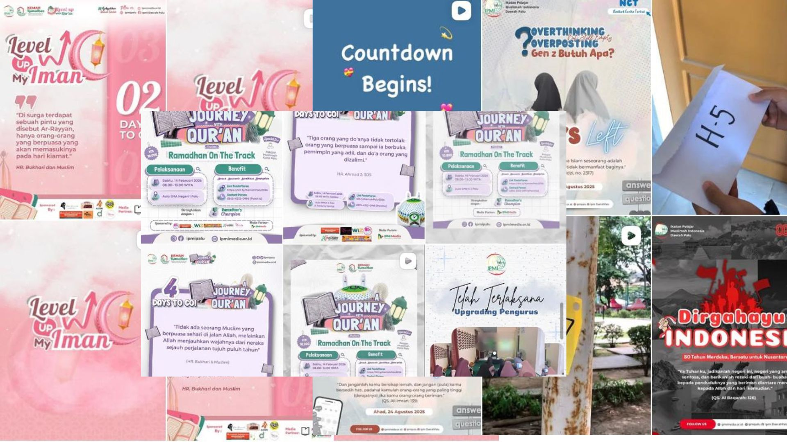

✍️ Kepenulisan

Saya memiliki minat dalam bidang kepenulisan, khususnya penulisan berita, live report, Opini, puisi, dan cerpen. Melalui kegiatan organisasi, saya belajar menyusun informasi secara menarik, komunikatif, dan mudah dipahami sesuai kebutuhan media kampus.
🎬 Video Editing

Saya juga memiliki ketertarikan dalam bidang editing video sederhana untuk dokumentasi dan media sosial organisasi. Melalui kegiatan organisasi, saya sering membuat video kegiatan, mengatur transisi, musik, serta menyusun konten visual agar lebih menarik dan informatif.